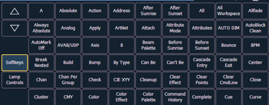

When you have created a macro using macro learn mode from live or otherwise, you can edit the content of your macro by removing or adding commands and special macro softkey functions (such as wait, loop, and so on).
From the macro editor display, select an existing macro number and press [Enter]. The selected macro contents will display the detail section. Press {Edit} to make changes to the content.
When in edit mode, the browser changes to display all softkeys available for the system that would otherwise be difficult to find when recording a macro.

Next to the softkeys display are paging buttons to page through the available softkeys. When used, these paging buttons will not be stored as content in your macro.
In addition, a new set of macro editor softkeys are displayed while in edit mode including:
In edit mode, the cursor in the macro content detail section of the display provides use of the arrow keys to navigate through the existing content list. Use of the arrow keys will not be stored to the macro content.
To add content, place the cursor in the section that you want to insert, then add the command. To delete a command, place the cursor ahead of the content to be deleted, then press the {Delete} softkey.
Press [Select] when you have completed all editing. Press [Escape] to abort.
Note: Macros for options with a toggle action between enable and disable, such as AutoMark in setup, can use the {Enable} and {Disable} softkeys for creating absolute actions instead of toggles.